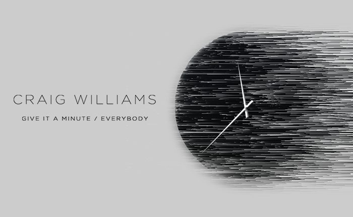

Craig Williams Arrives With a Double Dose of Deep, Hypnotic Vocal House for Insomniac Records


He does the perfect job of straddling both the underground and more accessible sides of dance music. This is demonstrated best by the impressive posse of labels he’s released music on so far, with everything from Dim Mak to Sweat It Out! to Ghostly International.
He’s also brought this versatility to his debut on Insomniac Records. Across the two-track release, he showcases his polished talents with “Give It a Minute,” which sees him collaborating with TWINKIDS, as well as the more soulfully driven “Everybody.”
We caught up with him to find out more about the new release.
Craig William’s Give It a Minute / Everybody is available here.
How have things been going this year?
I think this has been my most productive year so far. I have really enjoyed the collaboration process with the people I have been working with. I still have another two remixes and an EP to come this year, plus a load of original and collaboration material in the works. Along with the releases that people have seen come out, I have dipped my toe into music for picture, writing the score to a 12-part web series.
I understand you’re an Australian who moved a number of years ago to L.A. Tell us a bit about your life since you’ve made the move.
I think my life from Australia to here in Los Angeles couldn’t be more different. I left a job of flying in helicopters for the ambulance to making music my full-time “job.” I really like living here in L.A. Seeing the output of my friends really helps keep you motivated on the days you’re not feeling it.
One of the key things about your musical identity is that you seem to be able to cross the divide between the techno underground and the more accessible sides of dance music.
I just like listening to, playing, and making music that you can dance to. I grew up listening to so many different types of music (I still do today), so to bury yourself in just one style of music sounds crazy to me. It’s like if your favorite food was tacos, and you had tacos every day, all day. That might be awesome for a while, but there is so much out there.
I think your versatility is showcased quite well on your upcoming two-track release on Insomniac Records. Tell us a bit about how this came together.
This record took a while to come together. I had written five or six song sketches for an upcoming vocal session. Whilst the sessions went really well, the vocals ended up getting used on other songs, and I was left with these five sketches.
I talked to my manager about different options for singers, and he suggested the TWINKIDS. I sent off the song idea to them, and they sent me back three super solid ideas. From there they came to my home, where I have a studio set up. We arranged the song, wrote the lyrics, and recorded the vocal in one day. Working with them was a super easy process; since they’re both singers, they could critique the vocal performance as they went.
I already had a vocal on “Everybody,” but it wasn’t working 100 percent, so I ended up replacing it with a vocal from my friend Mandy Jones. For her vocal, I wanted that sampled feel, but using an original vocal. I had her sing a bunch of different phrases, and I loaded them into a sampler and started jamming out to see what worked. Mandy also featured on “Not One” on the Insomniac EDC Las Vegas comp.
Follow Craig Williams on Facebook | Twitter | SoundCloud
Follow Insomniac Records on Facebook | Twitter | SoundCloud